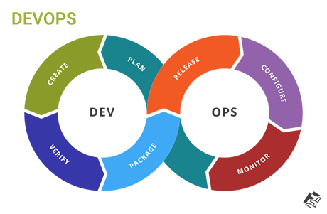

     <!-- WORK SECTION -->

     <!-- WORK SECTION MODAL -->
     <!-- Modal -->
   <!-- Button trigger modal -->

   <div class="modal fade" id="myModalselectedworks" tabindex="-1" role="dialog" aria-labelledby="myModalLabel" >
    <div class="modal-dialog" role="document">
      <div class="modal-content">
        <div class="modal-header">
          <button type="button" class="close" data-dismiss="modal" aria-label="Close"><span aria-hidden="true">&times;</span></button>
          <h4 class="modal-title" id="myModalLabel">Modal title</h4>
        </div>
        <div class="modal-body">
         <div id="carousel-example-generic" class="carousel slide" data-ride="carousel">
              <!-- Indicators -->
              <ol class="carousel-indicators">
                <li data-target="#carousel-example-generic" data-slide-to="0" class="active"></li>
                <li data-target="#carousel-example-generic" data-slide-to="1"></li>
                <li data-target="#carousel-example-generic" data-slide-to="2"></li>
              </ol>
            
              <!-- Wrapper for slides -->
              <div class="carousel-inner" role="listbox">
                <div class="item active">
                   
                   <div class="carousel-caption">
                     ...
                   </div>
                </div>
                <div class="item">
                  
                  <div class="carousel-caption">
                    ...
                  </div>
                </div>
             
              </div>
            
              <!-- Controls -->
              <a class="left carousel-control" href="#carousel-example-generic" role="button" data-slide="prev">
                <span class="glyphicon glyphicon-chevron-left" aria-hidden="true"></span>
                <span class="sr-only">Previous</span>
              </a>
              <a class="right carousel-control" href="#carousel-example-generic" role="button" data-slide="next">
                <span class="glyphicon glyphicon-chevron-right" aria-hidden="true"></span>
                <span class="sr-only">Next</span>
              </a>
            </div>
        </div>
        <div class="modal-footer">
          <button type="button" class="btn btn-default" data-dismiss="modal">Close</button>
          <button type="button" class="btn btn-primary">Save changes</button>
        </div>
      </div>
    </div>
  </div>
    <!--  -->
    <section id="work">
         <div class="container">
              <div class="row">

                   <div class="col-md-12 col-sm-12">
                        <div class="wow fadeInUp section-title" data-wow-delay="0.2s">
                             <h2>Seleted Works</h2>
                             <p>Expertise in converting any idea to a complete working web product, web application or
                                  web sites.</p>
                        </div>
                   </div>

                   <div class="wow fadeInUp col-md-3 col-sm-6" data-wow-delay="0.4s">
                        <!-- WORK THUMB -->
                        <div class="work-thumb" data-toggle="modal" data-target="#myModalselectedworks">
                             
                        </div>
                        <h4>E Commerce</h4>
                   </div>

                   <div class="wow fadeInUp col-md-3 col-sm-6" data-wow-delay="0.6s">
                        <!-- WORK THUMB -->
                        <div class="work-thumb" data-toggle="modal" data-target="#myModalselectedworks">
                             
                        </div>
                        <h4>PSD to HTML</h4>
                   </div>

                   <div class="wow fadeInUp col-md-3 col-sm-6" data-wow-delay="0.8s">
                        <!-- WORK THUMB -->
                        <div class="work-thumb" data-toggle="modal" data-target="#myModalselectedworks">
                             
                        </div>
                        <h4>Backend & DevOps</h4>
                   </div>

                   <div class="wow fadeInUp col-md-3 col-sm-6" data-wow-delay="0.8s">
                        <!-- WORK THUMB -->
                        <div class="work-thumb" data-toggle="modal" data-target="#myModalselectedworks">
                             
                        </div>
                        <h4>Progressive Web Application</h4>
                   </div>

              </div>
         </div>
    </section>